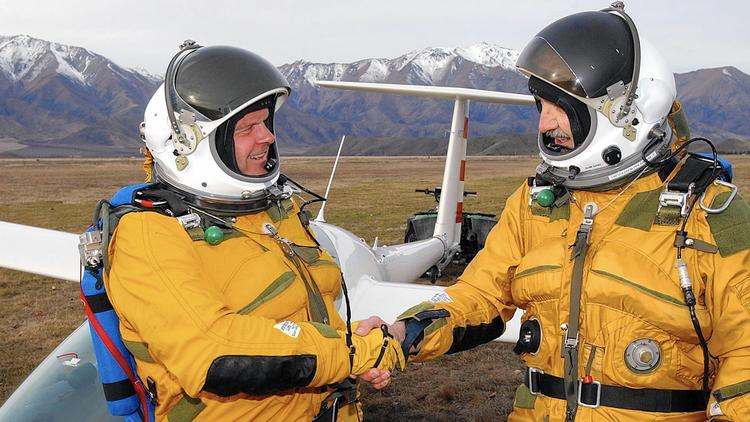

Pilot is building a glider to ride winds to the stratosphere — with no engine
Talk about serendipity.
Einar Enevoldson was strolling past a scientist's office in 1991 when he noticed a freshly printed image tacked to the wall.
He was thunderstruck; it showed faint particles in the sky that proved something he had long believed: The winds that rise off mountains travel far, far higher into the atmosphere than most people imagined, representing something of an "elevator" to the heavens.
It was an "a-ha!" moment for Enevoldson, a renowned test pilot and engineer. He soon began sketching out plans for a manned glider that could ride those winds toward the edge of space. No engine required.
So began a 24-year quest that inched closer to reality on Tuesday when Enevoldson's glider, the Perlan 2, underwent stress testing at ATA Engineering in Sabre Springs, northeast of San Diego. The company is helping to evaluate whether the sailplane, which is lighter than a Honda Fit, could climb to 90,000 feet.
That would obliterate the altitude record for gliders, which was set in 2006 when Enevoldson and fellow pilot Steve Fossett rose to 50,727 feet during a climb through the skies above Argentina.
They succeeded by taking advantage of the comparatively rare moments when mountain winds are given extra lift by the polar vortex, an expanse of cold, swirling air found at the world's poles. Scientists call them stratospheric mountain waves.
Enevoldson oversees a team that will try to reach a new milestone next year. The attempt will again be made in Argentina, but this time Enevoldson won't be in the glider's cockpit. He's 83 and coping with health issues.
But he knows how he would feel if pilots Jim Payne and Morgan Sandercock guide the milky white glider to an unprecedented altitude.
"It will prove that I'm right — you can really ride these mountain waves to great heights," Enevoldson said Tuesday, standing next to the aircraft. "It will show that I'm not some crackpot."
That's not quite how his team's marketing people would word it.
Enevoldson is founder and chairman of the Airbus Perlan Mission 2 project. It's an effort to show that a manned glider can make the transition from the lowest layer of the atmosphere — the troposphere — to the stratosphere, where most commercial jets fly.
The goal: Slowly climb to 90,000 feet, or roughly 17 miles high.
It is a lofty goal that begins with some basic physics.
"The wind blows over the mountain, comes down the backside, then it rebounds, just like water does as it moves over a rock in a stream," Payne said. "It's an extremely amazing phenomenon."
Scientists used to think the winds that rise from the leeward side of mountains didn't travel much higher than the troposphere, which varies in altitude, depending on location and season. The altitude generally ranges from 4 to 12 miles.
But researchers eventually learned that these mountain waves can make their way well into the stratosphere, if conditions are right.
Enevoldson said he came to understand this on a deep level in 1991 when he noticed a research photo that a scientist had placed on his wall at DLR, the German Aerospace Center in Munich. A laser sensor system picked out particles of high-altitude clouds that arose, in part, due to wind.
"I happened upon this by accident. I wasn't looking for it," Enevoldson said. "I was just walking from one place to another."
He was one of a comparatively few people who could appreciate what he was seeing. Enevoldson had decades of flying experience, including longtime service with the Air Force as a fighter pilot and years with NASA as a test pilot. He also had an extensive background in engineering.
He later partnered with billionaire adventurer-pilot Fossett and scientists to explore the idea of riding these waves to untold heights in a glider. That led to his successful flight with Fossett.
Then Fossett died in a plane crash in 2007 and the project limped along until Airbus, the European airplane consortium, began providing financial support in 2014.
The project leaped ahead in September of this year when Payne and Sandercock guided Perlan 2 on a successful test flight in Oregon. That led to Tuesday's stress testing at ATA Engineering.
"The ultimate purpose of this aircraft is scientific research. We can go higher than any other aircraft, taking samples and measurements that no one else can do," Sandercock said.
Enevoldson stresses a more fundamental form of human curiosity.
"What this amounts to is a place on Earth that no one has been and no one has explored," he said as engineers jostled Perlan 2's wings.
"The Earth is such a magnificent and interesting thing. When there's something new about it, you have to go see it. It's there. I have no choice. I have to do this."